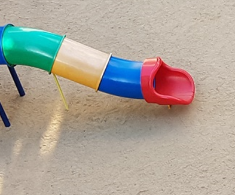

16개월 된 아들은 장난감을 던지는 행동을 자주 보이며, 원하는 것이 충족되지 않거나 좌절을 경험할 때는 울거나 큰 소리로 소리를 지르는 등을 강하게 나타내기 때문에 엄마는 아들과 일상적인 상호작용이 잘 안되어 화가나고 감정적으로 꾸중을 함. 아들의 수면 패턴은 일정하지 않아 밤에 잠들기까지 오랜 시간이 걸리고, 수면 중 자주 깨는 경향을 보이기 때문에 하루 일과 전반에 스트레스가 쌓여가고 있음. 또한 아들은 간식을 수시로 요구하며, 정해진 식사 시간에는 집중하지 못하고 자주 자리를 이탈하거나 특정 음식만을 고집하는 편식 경향이 강하게 나타나 건강한 식습관 형성에 어려움을 겪음.
내담자는 자녀의 감정적 반응과 일상 행동들을 어떻게 지도하고 대응해야 할지에 대해 혼란을 느끼고 있음. 내담자는 자녀가 아직은 어려서 요구를 수용해야 할지 또는 경계를 설정해야 할지 고민이 높다고 호소함. 이로 인해 일관된 양육 방식을 유지하는 데 어려움이 따르며, 양육 스트레스 또한 점차 누적되고 있는 상황을 확인함.
1. 아동의 상황
1) 정서‧심리적 상태
아동은 감정 표현이 즉각적이고 강도 높게 나타나며, 좌절 상황에서 울거나 고함을 지르는 등의 반응을 통해 정서적 긴장을 해소하려는 경향을 보임. 이는 생후 16개월이라는 발달 시기상 언어적 표현이 제한된 상태에서 나타나는 정상적인 정서 발달 양상일 수 있으나, 과도한 반응의 빈도와 지속성은 내적 긴장 상태의 누적이나 환경적 불안정성과 연관될 가능성도 있음. 특히 신체적 긴장이나 정서적 불편함을 행동으로 즉각 표출하는 방식은, 위로받고 조절되는 경험이 부족했을 가능성을 시사함. 또한 아동은 안정감 있는 양육자의 감정 반영과 일관된 환경적 구조 안에서 정서를 해석받고 안정시키는 경험이 반복적으로 제공될 필요가 있으며, 이는 이후 자기 감정에 대한 인식 및 조절 능력 형성에 직접적인 영향을 미칠 수 있음.

2) 자아조절능력
아동은 아직 충동 통제와 감정 조절 능력이 충분히 발달되지 않은 시기로, 욕구가 즉시 충족되지 않으면 강한 정서 반응으로 이어지며 이를 스스로 조절하거나 대체 행동으로 전환하는 능력이 미숙함. 이러한 자아조절능력의 미비는 발달적 특성으로 볼 수 있으나, 외부 환경이 정서적 긴장을 완화하거나 욕구 충족이 지연되는 경험을 조화롭게 제공하지 못할 경우 조절 기능의 내면화가 지연될 수 있음. 아동은 감정이 격해질 때 주변 어른이 어떻게 반응하는지를 관찰하고 모방함으로써 조절 전략을 배우기 때문에, 부모의 일관되고 따뜻한 대응은 핵심적인 조절 능력 발달의 기반이 됨. 특히 식사 중 자주 자리를 벗어나거나 수면 시간이 일정하지 않은 모습은 자기 몸의 욕구와 상태를 스스로 조율하는 경험이 부족함을 반영하며, 일상 속 구조화와 일관된 환경 조성이 조절력 발달에 중요한 기초가 됨.
3) 부모와의 관계
아동은 양육자의 반응에 민감하게 반응하며, 위급하거나 불편한 상황에서 주 양육자를 통해 안정감을 찾고자 하는 애착적 행동을 보임. 이는 정상적인 애착 발달 과정에서 흔히 나타나는 모습이며, 아동이 양육자를 ‘안전기지’로 인식하고 신체적‧정서적 접촉을 통해 안정을 취하려는 본능적인 표현으로 해석할 수 있음. 그러나 부모가 아동의 행동을 혼란스럽게 인식하고 일관된 반응을 제공하지 못하는 경우, 아동은 반복적으로 예측 불가능한 반응을 경험하게 되어, 주 양육자와의 정서적 연결이 불확실하게 느껴질 수 있음. 이는 애착 형성에 혼란을 유발하며, 아동은 양육자에게 다가가는 동시에 회피하거나 저항하는 등의 불안정 애착 형태를 형성할 가능성이 있음. 특히 외동 자녀로 부모와의 상호작용 빈도와 질이 전반적인 정서 안정과 사회적 신뢰 형성에 절대적인 영향을 미치는 시기인 만큼, 부모의 정서적 민감성과 반응의 일관성이 핵심적 과제임.
4) 자아개념 특징
아동은 자율성과 탐색 욕구가 증가하는 시기로, 자신의 의지를 표현하고 환경을 통제하려는 시도를 강하게 보이며, 이러한 행동은 초기 자아개념 형성 과정의 일환으로 이해됨. 물건을 스스로 선택하거나 자신이 원하는 대로 행동하려는 시도는 "내가 할 수 있다"는 자기 효능감의 기반을 마련하는 과정이며, 이러한 욕구가 반복적으로 존중받고 성공적으로 마무리될 때 긍정적인 자아개념 형성으로 이어짐. 그러나 자신의 시도가 제지당하거나 반응 없이 무시되거나, 감정이 과도하게 통제되면 자율성 대신 수치심과 불신을 경험하게 되어 부정적인 자아 인식을 형성할 수 있음. 현재 아동은 자신이 세상과 관계 맺는 방식과 자신의 영향력을 실험하는 과정을 경험하고 있으며, 부모는 이를 단순한 고집이나 반항으로 해석하기보다는 ‘자아 형성의 기초 작업’으로 인식하고 지지적인 자세로 접근할 필요가 있음. 특히 이 시기의 정서적 반응과 자율적 행동 시도는 모두 자아 인식과 자기 효능감의 기초가 되므로, 반복적으로 존중받고 수용되는 환경이 무엇보다 중요함.
2. 부모양육 및 훈육 방법
1) 감정 수용과 명확한 한계 설정 병행
아동이 울거나 소리를 지르며 분노를 표현할 때, "화가 났구나"라고 감정을 언어로 반영해주어 정서를 수용하되, 물건을 던지거나 때리는 행동에는 "엄마는 그런 행동은 안 된다고 생각해. 던지면 다칠 수 있어"와 같이 차분하지만 분명한 메시지로 경계를 설정하도록 안내함.
2) 일과 구조화 및 루틴 형성
수면과 식사 시간을 일정하게 유지하는 것이 아동의 정서 안정과 자기조절에 큰 도움이 되므로, 아침 기상-식사-놀이-낮잠-저녁-취침 등 기본 일과표를 구성하고 눈에 보이는 그림일과표로 시각화하는 방법을 제안함. 루틴에 따라 하루를 반복적으로 경험하게 함으로써 예측 가능성을 높이고, 과도한 간식 섭취는 줄이며 식사 전 자연스러운 허기를 유도함.
3) 놀이를 통한 상호작용 강화
정서적 교감이 중심이 되는 1:1 놀이 시간을 매일 일정 시간 확보하도록 권장함. 아동이 주도하는 자유놀이를 중심으로 하며, 부모는 판단이나 통제 없이 아동의 시도와 감정을 따라가 주는 역할을 함으로써 애착 안정화 및 자기표현 기회를 확대함.
4) 긍정적 행동 강화 전략 사용
원하는 행동(예: 장난감 정리, 앉아서 식사하기 등)이 나왔을 때 즉각적이고 구체적인 칭찬(“앉아서 기다려줘서 정말 고마워!”)을 통해 긍정적 행동을 강화하고, 잘된 점을 명확히 인식하도록 유도함. 반대로 바람직하지 않은 행동은 과도하게 반응하지 않고, 안전을 해치지 않는 범위 내에서는 무반응 전략도 병행함.
3. 아동을 위한 놀이 개입 전략
1) 정서 표현과 조절을 돕는 감정 놀이
감정 얼굴 그림 맞추기
간단한 그림 카드(웃는 얼굴, 우는 얼굴, 화난 얼굴 등)를 보여주고 아이가 기분이 어떤지 가리키거나 따라하게 함.
➤ 효과: 아동이 자신의 감정을 인식하고, 타인의 감정도 인지하게 됨. 감정 표현을 언어로 연결하는 초기 단계 제공.
감정 인형 놀이
다양한 감정을 표현하는 손인형이나 봉제인형을 활용하여 아동의 감정을 대변하게 하고, 인형이 감정을 느끼는 상황을 설정하여 아동이 반응하게 함.
➤ 효과: 간접적으로 감정을 해소하고 자기 감정을 투사하여 조절하는 경험 제공.
2) 자기조절력을 향상시키는 구조화 놀이
간단한 규칙 있는 놀이 (예: 공 넣기, 블록 쌓기)
“시작~”, “멈춰~” 같은 간단한 신호를 반복하며 놀이 중 규칙을 알려주고, 부모와 순서를 주고받는 활동 진행.
➤ 효과: 아동이 행동을 멈추고 기다리는 ‘조절’ 기능 연습. 일관된 반복을 통해 예측 가능성 확보.
그림 일과표 따라하기 놀이
식사–놀이–정리–낮잠 등의 일과를 그림으로 보여주고, 해당 활동마다 맞는 소품(예: 숟가락, 베개 등)을 직접 가져오게 하는 놀이로 연결.
➤ 효과: 하루 흐름을 시각화하고 순서 인식을 도우며 일상 속 안정감 형성.
3) 애착 강화를 위한 상호작용 놀이
스킨십 기반 애착 놀이 (까꿍, 무릎말 타기, 뒤에서 안아주기 등)
반복적이고 예측 가능한 놀이(까꿍, 숨었다 나오기 등)를 통해 부모와의 친밀감을 강화.
➤ 효과: 안전기지 역할을 하는 양육자와의 신체적 정서적 연결 강화 → 안정 애착 형성.
함께 노래 부르기와 율동 놀이
‘곰 세 마리’, ‘올챙이와 개구리’ 같은 친숙한 동요를 함께 부르고 율동을 따라 하며 공동의 즐거움을 경험하게 함.
➤ 효과: 리듬과 반복을 통한 안정감 제공, 양육자와의 즐거운 상호작용 경험 증진.
4) 긍정적 자아개념을 키우는 성취 놀이
혼자 해보기 놀이 (예: 신발 넣기, 블록 올리기, 스티커 붙이기 등)
아이가 성공할 수 있는 간단한 활동을 스스로 하도록 유도하고, 시도 자체를 격려하며 결과보다는 과정에 칭찬을 집중.
➤ 효과: “내가 할 수 있다”는 자기효능감 강화 → 긍정적 자아개념 발달.
칭찬 카드 만들기
행동 후 부모가 아이의 좋은 시도나 감정 조절을 칭찬하며 작은 스티커나 스마일 마크를 제공하고, 이를 모아 벽에 붙이는 ‘칭찬 공간’ 마련.
➤ 효과: 긍정적 강화와 자기 행동의 피드백 제공 → 자아존중감 향상.
2021.11.02 - [분류 전체보기] - 영아기와 유아기 놀이의 중요성과 인지발달과 관계
영아기와 유아기 놀이의 중요성과 인지발달과 관계
1. 영아기와 유아기 놀이의 의미 아이에게 놀이란 세상을 배우는 수단이자 삶 그 자체다. 또한 놀이야말로 아이를 아이답고 건강하게 키울 수 있는 유일한 방법이다. 아이는 놀이를 통해서 사회
think-sis.co.kr
2021.08.22 - [분류 전체보기] - 징징 울고 떼쓰는 아이- 불안한 감정을 본능적으로 나타내는 행동
징징 울고 떼쓰는 아이- 불안한 감정을 본능적으로 나타내는 행동
아이가 징징 울고 떼쓰는 경우는 내재된 자신의 불안한 감정을 나타내는 것이다. 이러한 아이들의 문제 행동에 대한 특징과 문제행동에 대한 지도방법은 다음과 같다. 1. 울기, 징징거리기 등과
think-sis.co.kr